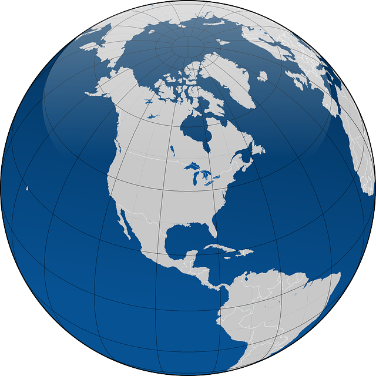

{% load greaterthan %}

<!DOCTYPE html>
<html>
<head>
    <meta charset="utf-8">
    <link rel="stylesheet" type="text/css" href="ol/ol.css">
    <link rel="stylesheet" type="text/css"98
    href="https://cdnjs.cloudflare.com/ajax/libs/extjs/6.2.0/classic/theme-triton/resources/theme-triton-all.css"/>

    <!-- Openlayers latest    -->
    <link rel="stylesheet" href="https://openlayers.org/en/latest/legacy/ol.css" />
    <script type="text/javascript" src="https://openlayers.org/en/latest/legacy/ol.js"></script>
    <script src="https://cdn.polyfill.io/v2/polyfill.min.js?features=requestAnimationFrame,Element.prototype.classList,URL,Object.assign"></script>

    <!-- Ol-ext    
    <link rel="stylesheet" href="https://cdn.rawgit.com/Viglino/ol-ext/master/dist/ol-ext.min.css" />
    <script type="text/javascript" src="https://cdn.rawgit.com/Viglino/ol-ext/master/dist/ol-ext.min.js"></script>--> 

    <!-- font-awesome is an iconic font, which means we can draw resolution-independent icons -->
    <link href="//netdna.bootstrapcdn.com/font-awesome/3.2.1/css/font-awesome.css" rel="stylesheet">
    <script src="https://kit.fontawesome.com/e0ae52ec67.js" crossorigin="anonymous"></script>

    <!--Spiner-->
    <link rel="stylesheet" href="https://cdn.jsdelivr.net/npm/bootstrap@4.6.2/dist/css/bootstrap.min.css">
    <script src="https://cdn.jsdelivr.net/npm/jquery@3.6.1/dist/jquery.slim.min.js"></script>
    <script src="https://cdn.jsdelivr.net/npm/popper.js@1.16.1/dist/umd/popper.min.js"></script>
    <script src="https://cdn.jsdelivr.net/npm/bootstrap@4.6.2/dist/js/bootstrap.bundle.min.js"></script>

    <!--Cesium
    <script src="https://cdn.jsdelivr.net/gh/openlayers/openlayers.github.io@master/en/v6.3.1/build/ol.js"></script>
    <script src="https://openlayers.org/ol-cesium/olcesium.js"></script>
    <script src="https://cesiumjs.org/releases/1.62/Build/CesiumUnminified/Cesium.js"></script>
    <script src="https://cesium.com/downloads/cesiumjs/releases/1.62/Build/CesiumUnminified/Cesium.js"></script>
    <script src="https://cesiumjs.org/releases/1.53/Build/Cesium/Cesium.js" charset="UTF-8"></script>-->
    
    <!--Local Css-->
    <link rel="stylesheet" href="agrins/theme_local.css"/>
    <link rel="stylesheet" href="agrins/ol-ext.css"/>


</head>

<body >
    <div id="spiner" class="container">        
        
        <h2>Agrins</h2>
        <p>Geoportal</p>                                             
        
        <div class="spinner-grow spinner-grow-sm"></div>
        <div class="spinner-grow spinner-grow-sm"></div>
        <div class="spinner-grow spinner-grow-sm"></div>

      </div>
    <div id='description' >    
    </div> 
    <div id="map" class="map" > </div>

    
<script src="ol/ol.js"></script>
<script src="https://cdnjs.cloudflare.com/ajax/libs/proj4js/2.3.15/proj4.js"></script>
<script src="https://cdnjs.cloudflare.com/ajax/libs/extjs/6.2.0/ext-all.js"></script>


<script>
    Ext.Loader.setConfig({
        enabled: true,
        paths: {
            'GeoExt': 'geoext/src',       
        }
    });

    
    const project_name = "{{ project_name }}";
    const project_notes = "{{ project_notes }}";
    const uuid = "{{ uuid }}";
    const project_path = "{{ project_geoserver_path }}";
    const isDemo = {{ is_demo|yesno:"true,false" }};

    //const moreThanOneFlight = true; //{{ flights|length|gt:1|yesno:"true,false" }};
    //const isMultispectral = {{ is_multispectral|yesno:"true,false" }};
    
    
</script>

<script src="panel.js"></script>
<script src="agrins/controlsMap.js"></script>
<script src="agrins/help.js"></script>
<script src="agrins/datamodel.js"></script>
<script src="agrins/ol-ext.js"></script>

</body>
</html>